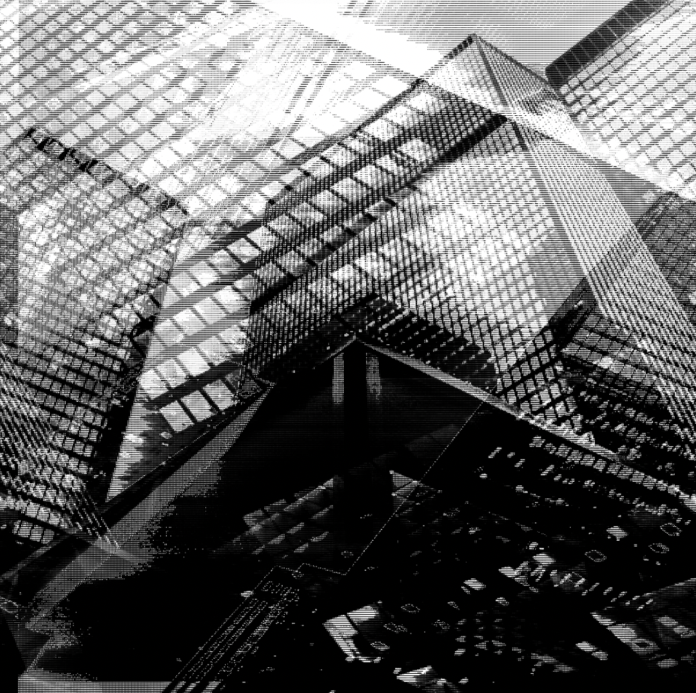

I remember waiting,
sitting in front of the computer.
In my office,
the walls were white.
White light above
casted shadows
revealing the rough texture.
The sun can't come in here.
My door was ajar.
John walked by
to touch base,
said what he always said:
work-life.
But before leaving,
he made a promise.
So I listened to him.
I stared at the screen
and saw how it was all
red, green, blue.
A tulip bed.
I remember sending an email,
waiting in front of the computer.
On the white walls,
shadows crawled.
John walked by following up,
said what he always said:
work life.
I didn’t understand,
but I listened to him.
Before leaving, he made his promise:
“There’s more on the other side.”
So I leaned in closer to my screen.
Straining my neck,
I saw how it was all
red, green, blue.
Cellophane candy wrappers.
I remember to keep my eyes on the computer.
There was no other choice.
Waiting for emails.
It was whatever they wanted me to do.
The company— they watch me—
cameras like black eyes in every corners.
Everyone in the office was typing––
sounds closing in around me,
cracking, constant, mechanical.
like the hatching of eggs.
All in unison. We’re all the same.
John walked by, circling back:
Life.
Promise?
“There’s more on the other side.”
So I listened.
I pushed my neck forward,
kept my eyes open
and saw how it’s all
red, green, blue.
A swarm of colored flies.
I remember they’re watching me.
Black pupil at the top of my screen
A green dot next to it.
But my eyes—
they were strained, dry, and bloodshot.
Each blink was relief.
Each blink was a fraction of a second off
from the eight hours I was kept here.
The email hadn’t come in.
I couldn’t look away.
John’s promise,
“There’s more on the other side.”--
his words to me before he was escorted out.
Fired.
He didn’t know why.
Eighteen years, and he didn’t know why.
But he swore to me.
So I listened.
Straining,
my eyes touched the screen.
Then a hand on my neck
smashed my head in
but I didn’t die—
I was tossed in.
This was the beginning of my end.
Static crawled over my fingers and spine—
red, green, blue.
I saw all of it:
The tulip garden,
the candy bowl,
the flies’ nest
the shards of glass.
I don’t remember the life I had before this.
I don’t know what I missed out on.
I don’t know anyone anymore.
”There’s more on the other side.”
More where? Which side of the screen?
Why could he walk away but not me?
Where is my freedom after working so hard?
Am I free or trapped?
The unforgiving stabs of red, green, blue.pixels.